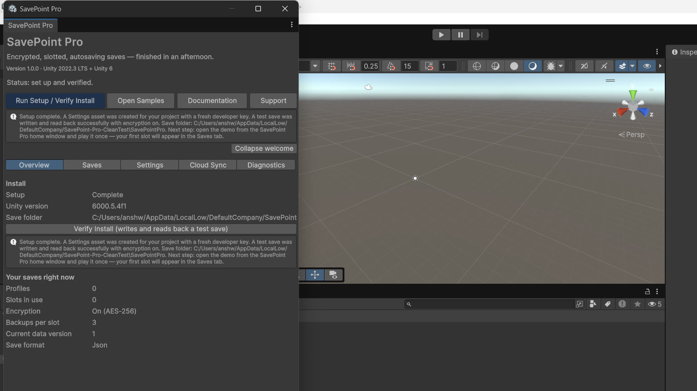

The editor window
Open it from Tools > ByteLura > SavePoint Pro > SavePoint Pro Home.

Welcome
The first-run screen: Run Setup / Verify Install, Open Samples, documentation and support — the four things a new buyer does, in order.
Overview
Your setup state as it actually is: settings asset, save folder, encryption on/off, current data version, profile and slot counts.
Saves
A browser for slot metadata across profiles — name, created/modified times, playtime, data version, summary — with slot deletion. It is a metadata browser, not a save editor: it does not open or edit the contents of a save.
Settings
The developer key, the current data version, the encryption toggle, and the backup-count setting (1–5).
Diagnostics
Run Self-Check exercises the real machinery in a temp folder — encrypted save, load, deliberate damage, backup recovery, a two-step version upgrade, and a mock-cloud sync — and reports every step in plain language. Run it before you write to support; half of all save problems are visible right there.